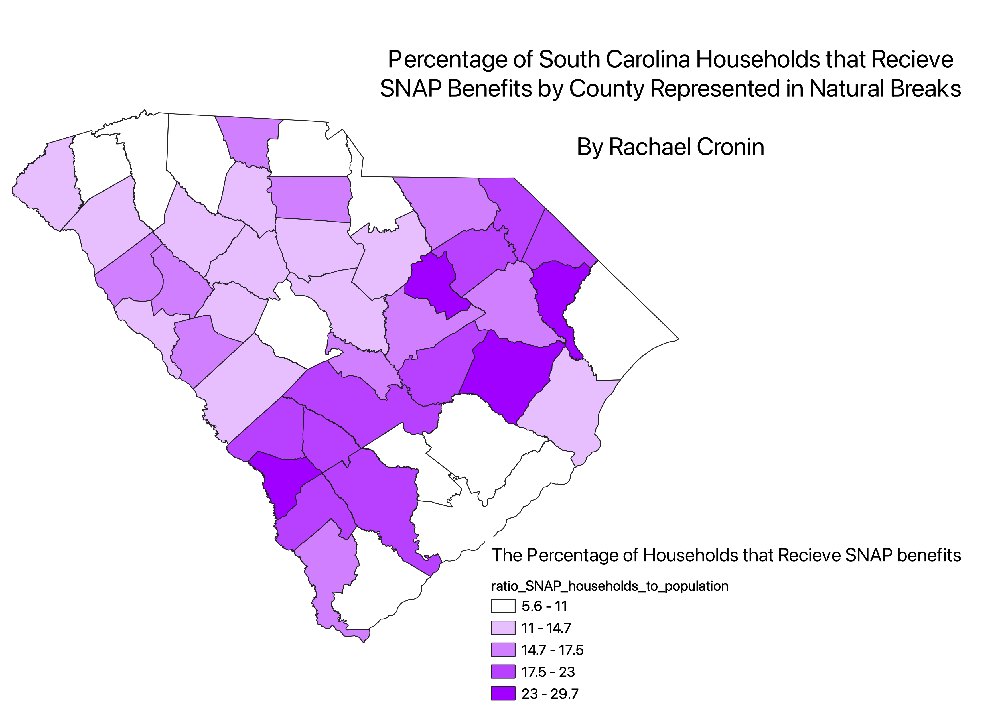

Homework 6: Normalized Census Data Choropleth
YOUR NAME
I chose to create a ratio of the number of households recieving SNAP benefits in the last 12 months per county to the total number of households per county. I used this ratio to normalize the data, as some representations of this information can be misleading if one county has a significantly higher population, as it would most likely also have a significant higher number of households recieving SNAP benefits. However, creating this ratio demonstrates how much of a specific county's population is recieving SNAP benefits and therefore gives us a better idea of the level of food security in that county in relation to the rest of South Carolina's counties.
Equal Count Quantile Categorization
Description of your map

Equal Interval Categorization
Description of your map

Natural Breaks Categorization
Description of your map

Data used for this project
CSV dataset
Link to shapefile